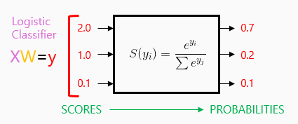
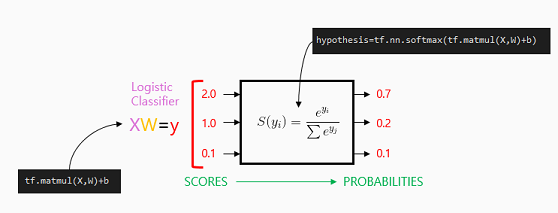

Softmax function

In TensorFlow

Cost function : cross entropy
cost = tf.reduce_mean(-tf.reduce_sum(Y*tf.log(hypothesis), axis=1))
optimizer = tf.train.GradientDescentOptimizer(learning_rate=0.1).minimize(cost) softmax_classifier.py (full code)
# Lab 6 Softmax Classifier
import tensorflow as tf
tf.set_random_seed(777) # for reproducibility
x_data = [[1, 2, 1, 1],
[2, 1, 3, 2],
[3, 1, 3, 4],
[4, 1, 5, 5],
[1, 7, 5, 5],
[1, 2, 5, 6],
[1, 6, 6, 6],
[1, 7, 7, 7]]
# one-hot encoding 적용
y_data = [[0, 0, 1],
[0, 0, 1],
[0, 0, 1],
[0, 1, 0],
[0, 1, 0],
[0, 1, 0],
[1, 0, 0],
[1, 0, 0]]
X = tf.placeholder("float", [None, 4])
Y = tf.placeholder("float", [None, 3]) # label의 개수
nb_classes = 3
W = tf.Variable(tf.random_normal([4, nb_classes]), name='weight')
# input 원소개수(=4), output 원소개수(=3)
b = tf.Variable(tf.random_normal([nb_classes]), name='bias')
# tf.nn.softmax computes softmax activations
# softmax = exp(logits) / reduce_sum(exp(logits), dim)
hypothesis = tf.nn.softmax(tf.matmul(X, W) + b)
# Cross entropy cost/loss
cost = tf.reduce_mean(-tf.reduce_sum(Y * tf.log(hypothesis), axis=1))
optimizer = tf.train.GradientDescentOptimizer(learning_rate=0.1).minimize(cost)
# Launch graph
with tf.Session() as sess:
sess.run(tf.global_variables_initializer())
for step in range(2001):
sess.run(optimizer, feed_dict={X: x_data, Y: y_data})
if step % 200 == 0:
print(step, sess.run(cost, feed_dict={X: x_data, Y: y_data}))
print('--------------')
# Testing & One-hot encoding
a = sess.run(hypothesis, feed_dict={X: [[1, 11, 7, 9]]})
print(a, sess.run(tf.argmax(a, 1)))
print('--------------')
b = sess.run(hypothesis, feed_dict={X: [[1, 3, 4, 3]]})
print(b, sess.run(tf.argmax(b, 1)))
print('--------------')
c = sess.run(hypothesis, feed_dict={X: [[1, 1, 0, 1]]})
print(c, sess.run(tf.argmax(c, 1)))
print('--------------')
all = sess.run(hypothesis, feed_dict={
X: [[1, 11, 7, 9], [1, 3, 4, 3], [1, 1, 0, 1]]})
print(all, sess.run(tf.argmax(all, 1)))
# tf.argmax를 이용하여 label값으로 받을 수 있다.
# 자세한건 여기서결과 창
# result0 5.0486245 200 0.5484253 400 0.43214864 600 0.35246614 800 0.2768296 1000 0.23268296 1200 0.21055324 1400 0.19221509 1600 0.17675191 1800 0.16353443 2000 0.15210833 ----------------- [[1.3890465e-03 9.9860197e-01 9.0612921e-06]] [1] -------------- [[0.9311919 0.0629022 0.00590591]] [0] -------------- [[1.2732840e-08 3.3411387e-04 9.9966586e-01]] [2] -------------- [[1.3890489e-03 9.9860185e-01 9.0613003e-06] [9.3119192e-01 6.2902242e-02 5.9059141e-03] [1.2732840e-08 3.3411387e-04 9.9966586e-01]] [1 0 2]